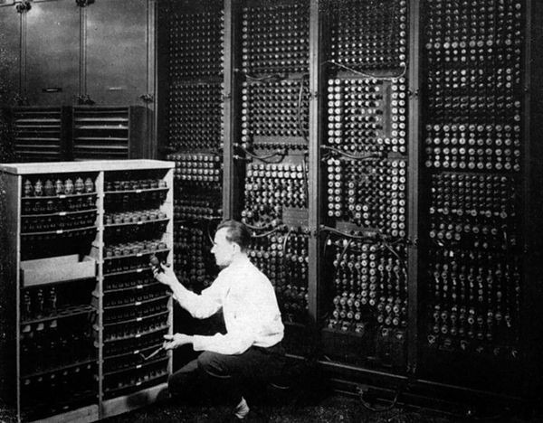

LA GUERRA NECESITA CÁLCULOS
El ejército estadounidense necesitaba miles de cálculos balísticos para mejorar la precisión de su artillería. Hacerlos a mano llevaba horas. A veces días.
Desliza para descubrir la historia REAL
El ejército estadounidense necesitaba miles de cálculos balísticos para mejorar la precisión de su artillería. Hacerlos a mano llevaba horas. A veces días.

Había ingenieros pero muchos estaban en el frente. Las universidades recurrieron a contratar jóvenes mujeres como computadoras humanas.
El ENIAC fue el primer ordenador electrónico de gran escala. -Diseñado para cálculos militares -Programado manualmente con cables y paneles -No existía el concepto de “programador” La programación aún no existía. Ellas la inventaron.